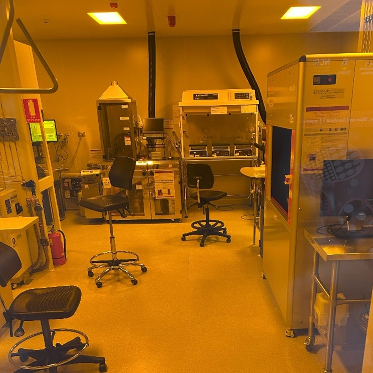
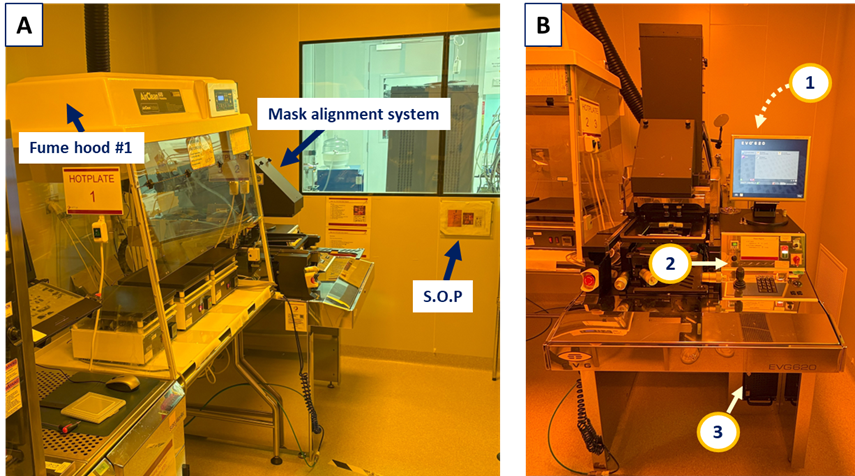
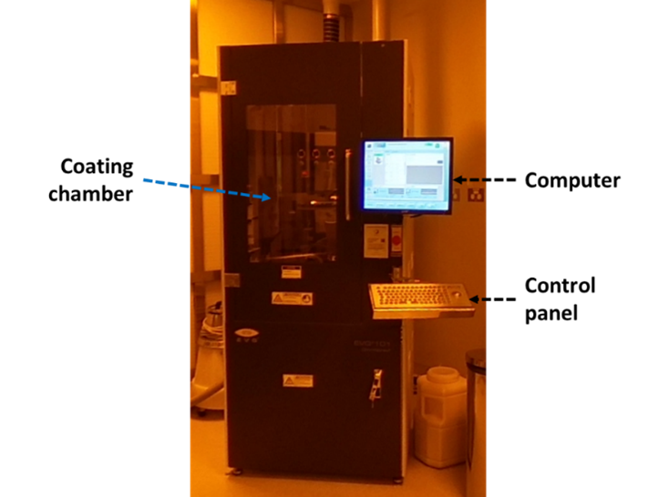
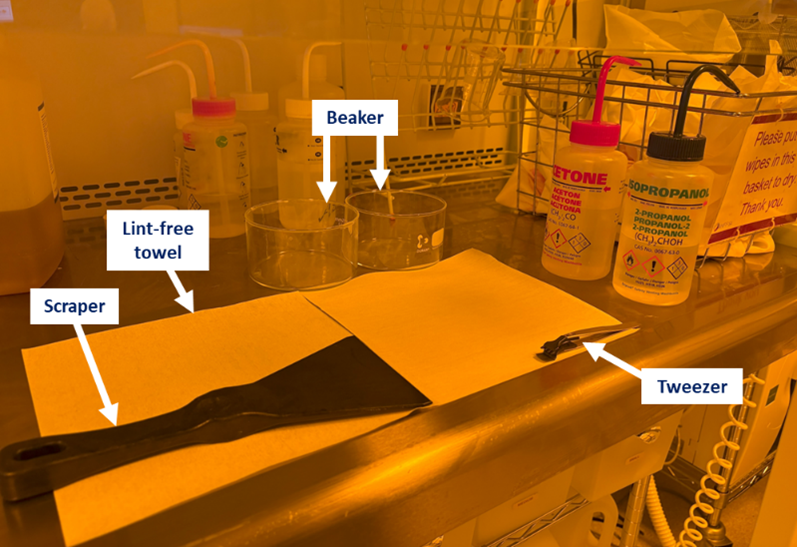

Australian National Fabrication Facility - South Australian node (ANFF-SA)
Lithography is the process by which a pattern is written or transferred to a substrate. The same pattern may be copied to many substrates, enabling the mass production of devices such as integrated semiconductor circuits of very fine scale which are the heart of microprocessor chips.
This virtual tour will take you around the ANFF-SA photolithography cleanroom, showcasing the special equipment needed for the process from blank silicon wafer to the final pattern after development.
The process occurs in four areas of the cleanroom: two fume hoods with chemicals needed for carrying out the coating and development (Fumehood #1 and Fumehood #2 in the floor plan diagram), the spin coater machine, and the mask aligner unit.
Fumehood #1 is used for the prebake process. The mask alignment system is used to expose ultraviolet light through the mask onto the photoresist-coated wafer.
The spin coater is used to uniformly spread a layer of photoresist on the silicon wafer. The wafer is first cleaned, and then a small amount of photoresist is applied. The wafer is spun in a controlled series of steps that results in a uniformly thick coating of photoresist over the entire surface.
Fumehood #2 stores the silicon wafers and photoresist, and is used for the development process. Here, the exposed wafer is developed in a developer solution, cleaned in a water and alcohol mixture, and finally dried with ultrapure nitrogen gas.
The photolithography process used at ANFF-SA utilizes an optically-sensitive chemical called a photoresist that forms a blank "canvas" on a silicon wafer. A thin layer of liquid photoresist is spread onto the wafer by spinning, in order to achieve a thin, uniform layer. This coated wafer is baked in order to dry the coating.
Through this process, a desired pattern is created on the wafer using a glass mask that has the master pattern in an opaque material (usually metal) laid onto it. The mask is placed over the coated wafer, and a beam of ultraviolet light is shined above the mask. The parts of the mask with clear glass expose the photoresist and cause a chemical change to happen, which those parts with the opaque coating are shielded from the light.
Photolithography technology is a fundamental process in modern microelectronics and nanotechnology fields, making the production of large-scale integrated circuits (ICs) possible.
The photolithography facilities at ANFF-SA can achieve feature resolutions approaching 1 µm. This precision allows researchers to develop and study miniaturized devices and explore new material properties.
Through this virtual tour, you can learn in detail about the actual operation and working principles of these devices, providing intuitive references for your research or studies.